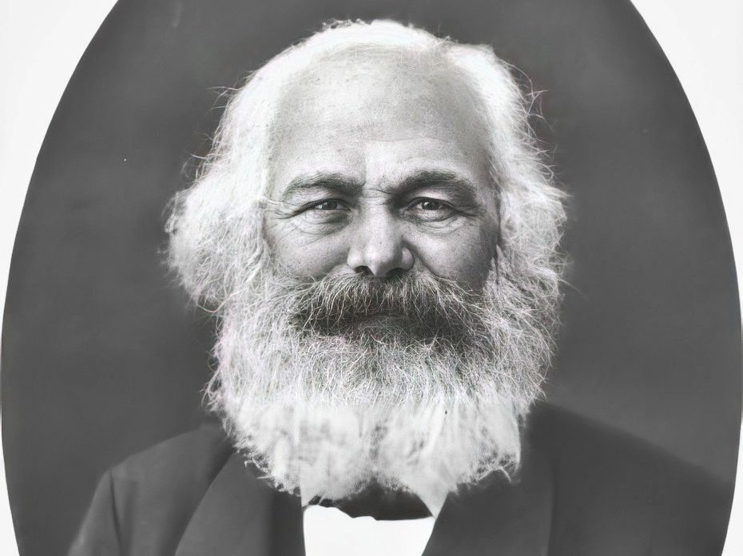

Karl Heinrich Marx
Escritor, economista, sociólogo, historiador, filósofo.

Biografia de Karl Marx
Karl Marx RSA (Tréveris, 5 de maio de 1818 – Londres, 14 de março de 1883) foi um filósofo, economista, historiador, sociólogo, teórico político, jornalista, e revolucionário socialista alemão. Nascido em Tréveris, Prússia, Marx estudou direito e filosofia nas universidades de Bona e Berlim. Casou-se com a crítica de teatro e ativista política alemã Jenny von Westphalen em 1843.Linha do tempo
1818 Nascimento de Karl Marx
1830 Marx estudou direito e filosofia nas universidades de Bona e Berlim.
Casou-se com a crítica de teatro e ativista política alemã Jenny von Westphalen
1843 Marx iniciou seus estudos no Liceu Friedrich Wilhelm, em Tréveris,
ano em que eclodiram revoluções em diversos países europeus.
1841 Obteve o título de doutor em Filosofia com uma tese sobre as Diferenças
da filosofia da natureza em Demócrito e Epicuro.
1842 Impedido de seguir uma carreira acadêmica, tornou-se, redator-chefe da Gazeta
Renana (Rheinische Zeitung), um jornal da província de Colônia.
1843 A Gazeta Renana foi fechada após publicar uma série de ataques ao governo prussiano.
Tendo perdido o seu emprego de redator-chefe, Marx mudou-se para Paris. Lá assumiu a direção da
publicação Deutsch-Französische Jahrbücher ('Anais Franco-Alemães') e foi apresentado a diversas
sociedades secretas de socialistas.
1843 Marx casou-se, com Jenny von Westphalen.
1843 Marx conheceu a Liga dos Justos (que mais tarde tornar-se-ia Liga dos Comunistas).
1883 Marx morre aos 64 anos de idade devido a bronquite e pleurisia.
Se quiser saber mais sobre Karl Marx, Clique Aqui
Fontes utilizadas na página: Timetoast e eBiografia